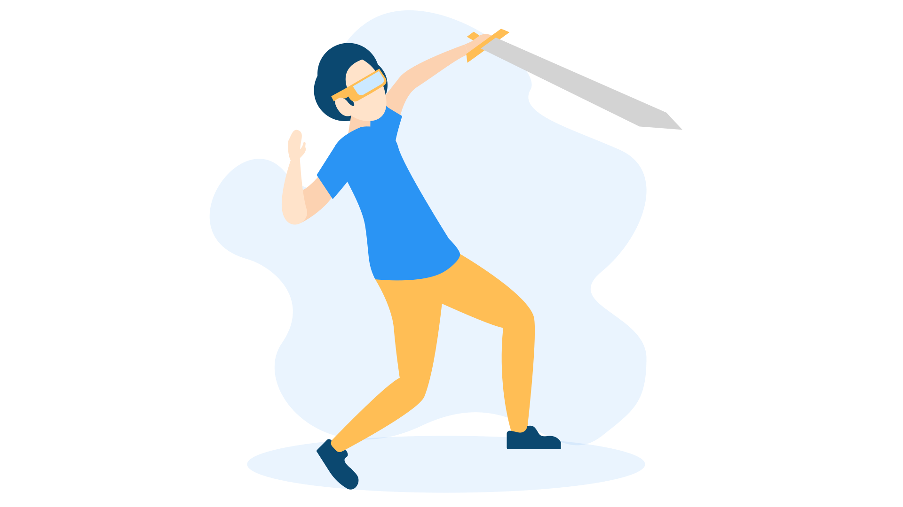

Welcome to TRGC!
The Retro Gaming Center has been in business since 2021. We are a place for the gaming community to gather, meet, and play together. We offer many services for the public. We have consoles and gaming computers on-site to reserve for playtime. We have a dedicated area in the building available to be reserved for tabletop games. The Retro Gaming Center is open to everyone and will not tolerate any exclusions, or unacceptable behavior.

TRGC Media
TRGC’s media page contains how-to videos and videos of events that have taken place at The Retro Gaming Center in the past. We try to keep this update with the latest videos.
View More...TRGC Gallery
TRGC’s gallery page contains pictures and images of events that have taken place at The Retro Gaming Center in the past. We try to keep this update with the latest images.
 View More...TRGC Events
Events that are held at The Retro gaming center vary. We try to keep everyone in mind when holding events. We have tabletop games, card games, computer games, and console game tournaments throughout the year. We also do lock-in events and all-night events.
 Learn More...
Learn More...